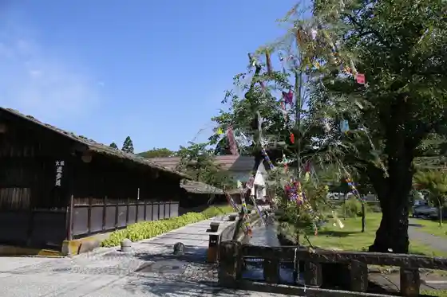
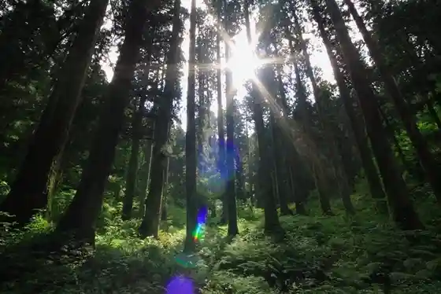
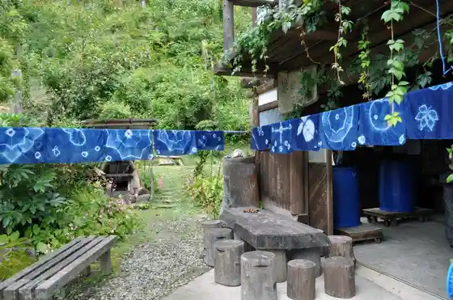
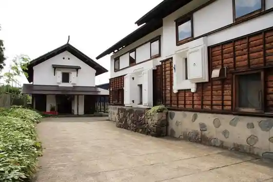

Oi Oi Park
Kaneyama, Yamagata · 0233-52-2111 · Official / source link

Dai Miwa no Osugi
Kaneyama, Yamagata · 0233-52-2111 · Official / source link

Kurashi Ko Bo
Kaneyama, Yamagata · 0233-52-7132 · Official / source link

Kura Shi Kan
Kaneyama, Yamagata · 0233-52-2111 · Official / source link

Maruko no Kura
Kaneyama, Yamagata · 0233-32-1212 · Official / source link
Taniguchi Ginzan Ato
Kaneyama, Yamagata · 0233-52-3192 · Official / source link
Kaneyama Mibu (Kusurishi Yama Naka Forest Kumataka Mori)
Kaneyama, Yamagata · 0233-52-2111 · Official / source link
Kamuro Virejji
Kaneyama, Yamagata · 0233-52-7725 · Official / source link
Kamuro Dam
Kaneyama, Yamagata · 0233-52-2111 · Official / source link
Guriimbare Kamuro
Kaneyama, Yamagata · 0233-29-5640 · Official / source link
Izabera Bado Kinenhi
Kaneyama, Yamagata · 0233-52-2111 · Official / source link
Kigokoro Hashi
Kaneyama, Yamagata · 0233-52-2111 · Official / source link
Fureai Forest
Kaneyama, Yamagata · 0233-52-2240 · Official / source link
Pogatto Park
Kaneyama, Yamagata · 0233-52-2111 · Official / source link
Sankinkotai Matsunami Ki
Kaneyama, Yamagata · 0233-52-2902 · Official / source link
Shumi no Ie Tobe
Kaneyama, Yamagata · 0233-52-7386 · Official / source link
Megane Seki
Kaneyama, Yamagata · 0233-52-2111 · Official / source link
Taisetsu Ri Taki
Kaneyama, Yamagata · 0233-52-3192 · Official / source link
Hachiman Park
Kaneyama, Yamagata · 0233-52-2111 · Official / source link
Iwa Enchi Kura
Kaneyama, Yamagata · 0233-52-2902 · Official / source link
Yugaku Forest
Kaneyama, Yamagata · 0233-64-3305 · Official / source link
Tsuchinoetatsu Sen'eki no Hi Sambonmatsu
Kaneyama, Yamagata · 0233-52-2902 · Official / source link